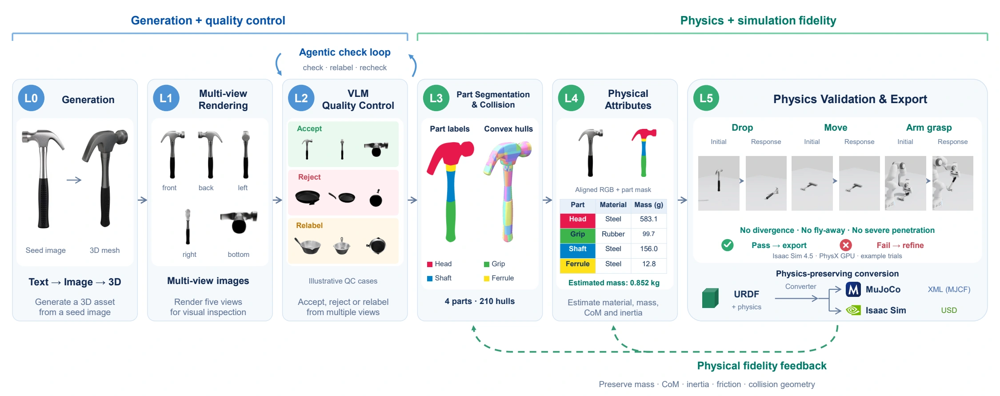

01 · Asset level
Rigid asset construction


Generate and inspect
Reconstruct a textured mesh and inspect it from several views. Reject incomplete objects or correct their category.
Build the physical model
Label functional parts, build convex hulls and combine part properties into mass, center of mass and inertia.
Export for simulation
Package the visual mesh, collision geometry and physical properties for import into multiple simulators.
Rigid asset collection
Explore RFW-W assets
Rigid objects packaged for import into multiple simulators, with textured surfaces for rendering and convex geometry for contact.
AppearanceCollision hulls
3D is unavailable. Showing the preview image.
No matching assets
3D previews are normalized for visibility. Dimensions refer to the packaged mesh.
The local review media bundle is not attached.